Polícia
Dirija a viatura com as setas fora do lugar, que mudam de ordem, e prenda o ladrão.
ImpulsividadeFlexibilidadeEspaço
JogarMais de 30 jogos para desenvolver atenção, memória, raciocínio, controle da impulsividade e visão espacial, junto com Português e Matemática. O aluno joga e a escola identifica logo no início as dificuldades de cada um. Tudo vai com a identidade visual da sua escola.
Apresentação dos jogos psicopedagógicos
Ler, calcular e interpretar dependem de habilidades como atenção, memória e controle dos impulsos, que podem ser treinadas. Os jogos transformam esse treino em desafio curto, divertido e com níveis.
Partidas curtas, com estrelas e níveis, que respeitam o tempo de atenção da criança.
Cada jogo tem níveis. A criança começa onde está e avança no próprio ritmo.
O erro vira pista para tentar de novo. É assim que a criança aprende a persistir.
Já nas primeiras partidas, a escola vê onde cada aluno trava, quando ainda dá tempo de ajudar.
Os jogos foram pensados a partir das funções executivas e cognitivas, as habilidades que ajudam a criança a se concentrar, planejar, controlar a impulsividade e resolver problemas.
Segurar a primeira resposta automática e escolher a certa. Isso ajuda nas provas, nas conversas e na convivência.
Achar regras, relacionar pistas e chegar a conclusões, a base para a Matemática e para a interpretação de texto.
Imaginar objetos girando, de lado e de cima. É uma habilidade importante para Geometria, leitura de mapas e escrita.
Guardar e usar a informação enquanto faz a tarefa, por exemplo seguir instruções de vários passos e fazer contas de cabeça.
Manter o foco até o fim e encontrar o que importa no meio do que distrai.
Trocar de estratégia quando a regra muda, sem travar e sem continuar no jeito antigo.
Pensar nos próximos passos antes de começar e organizar a tarefa do início ao fim.
O erro aparece sem castigo, e o aluno pode tentar de novo. Assim ele aprende a persistir.
E também lateralidade, percepção visual, velocidade de processamento, coordenação motora fina, consciência fonológica e linguagem.
Jogos psicopedagógicos de raciocínio e jogos de Português, Matemática, Geografia, História e Inglês. Deslize para ver e toque em jogar.
Dirija a viatura com as setas fora do lugar, que mudam de ordem, e prenda o ladrão.
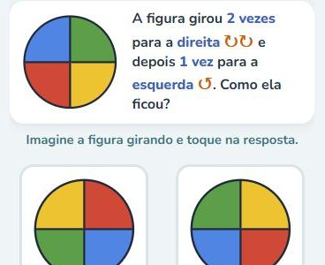
Imagine a figura girando no sentido do relógio ou ao contrário e descubra como ela ficou.

Memorize a sequência de formas e leve o carro pelo mapa até a casa.

Imagine as figuras transparentes uma sobre a outra e complete a chave.
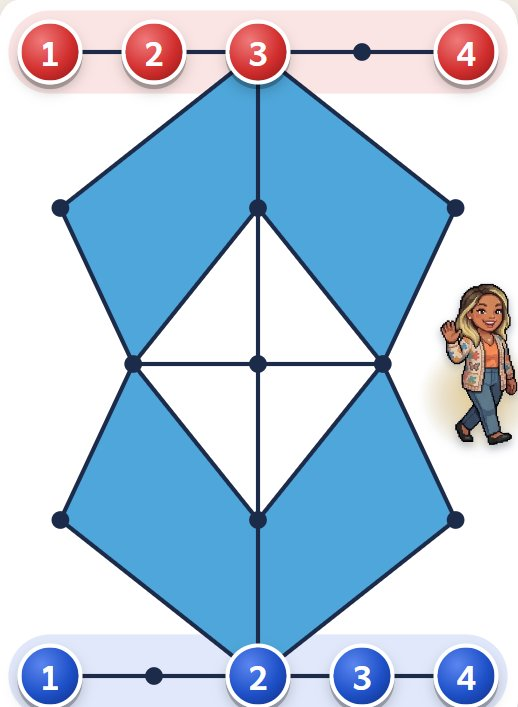
Desafios de raciocínio em que é preciso pensar antes de mover cada peça.
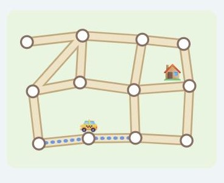
Veja o trajeto do táxi pelas ruas e refaça o mesmo caminho.
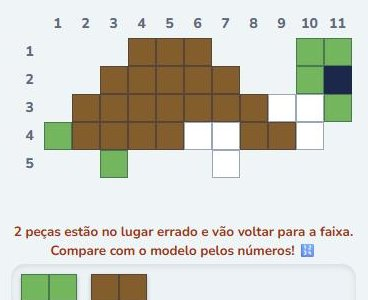
Arraste as peças e monte o desenho, comparando as linhas e as colunas numeradas.
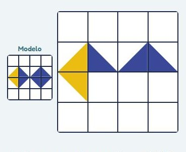
Monte a grade igualzinha ao modelo: a forma, a direção e a cor de cada peça.
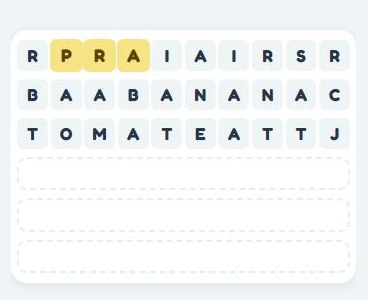
As linhas de letras não param de chegar: ache a palavra em cada uma, sem cair nas iscas.
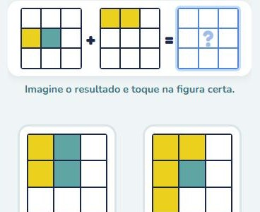
Some e subtraia figuras coloridas de cabeça e escolha o resultado certo.
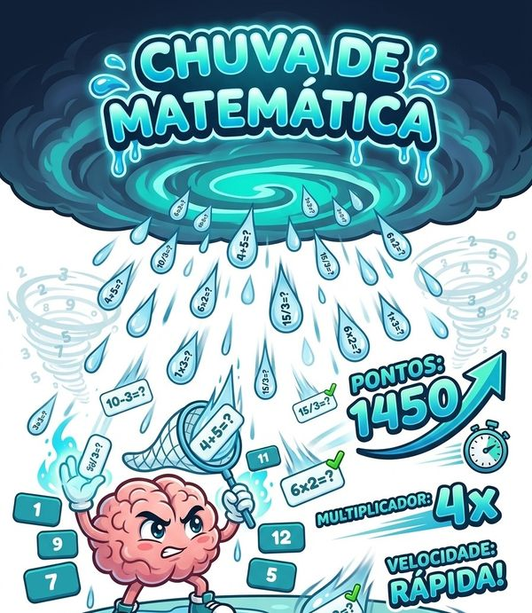
As contas caem: responda antes que cheguem ao chão. A dificuldade se ajusta ao aluno.
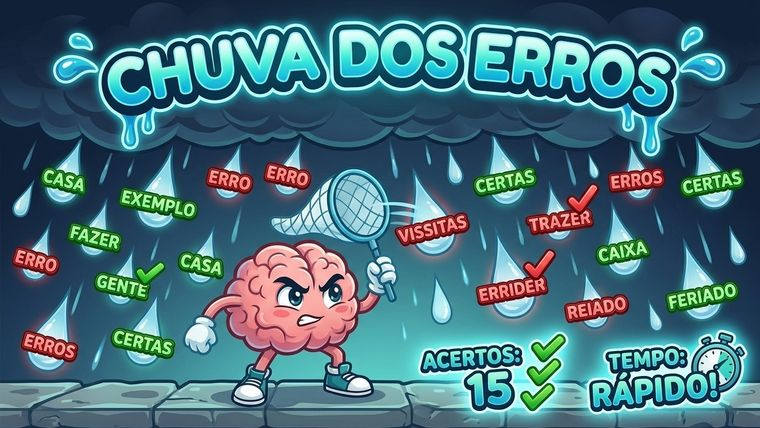
Pegue só as palavras escritas do jeito certo antes que elas sumam.
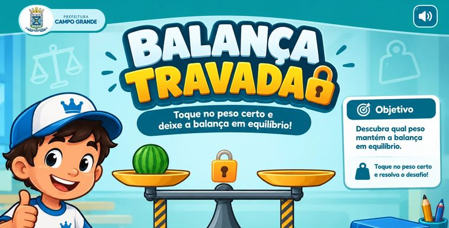
Equilibre a balança com pesos em kg, g e mg, convertendo as unidades.

Alfabetização: monte palavras com letras e sílabas, ligando a figura à escrita.
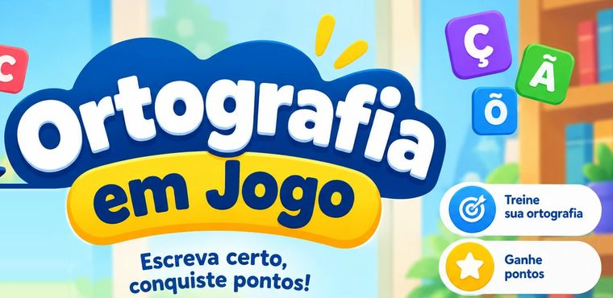
Missões com as dúvidas da escrita (S ou SS, Ç, R ou RR, acentos), com a regra explicada e a palavra falada.
Na tela de jogos, o aluno escolhe a habilidade que quer treinar, como “Pensar antes de agir”, “Lembrar” ou “Posição e espaço”, e encontra os jogos certos para ela.
Não é preciso esperar a prova do bimestre. Já nas primeiras partidas, o painel mostra quais habilidades estão abaixo do esperado em cada turma e em cada aluno. Assim a escola age cedo, quando ajudar é mais simples.
Os jogos não fazem diagnóstico. Eles mostram sinais que ajudam o professor e a psicopedagoga a decidir o que investigar e como ajudar.
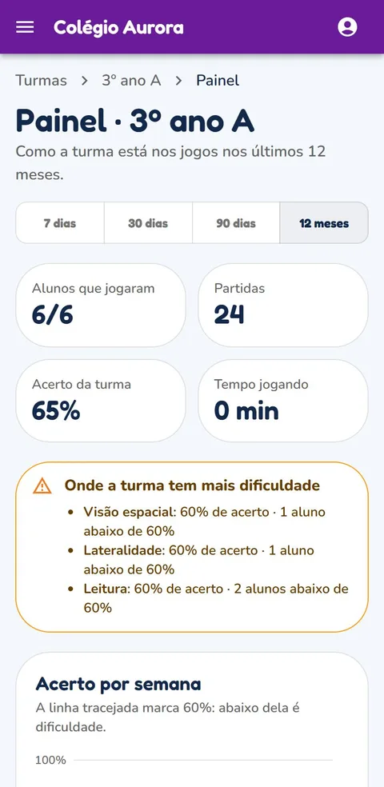
No fim de cada partida, o app gera um relatório com acertos, erros, tempo de resposta e o que cada aluno precisa revisar.
Exemplo ilustrativo de relatório
Turmas, painel, ficha do aluno, anamnese, plano de objetivos e área da família. Funciona no computador, no tablet e no celular.
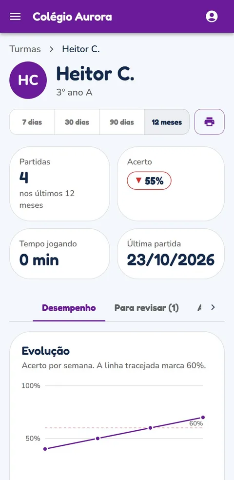
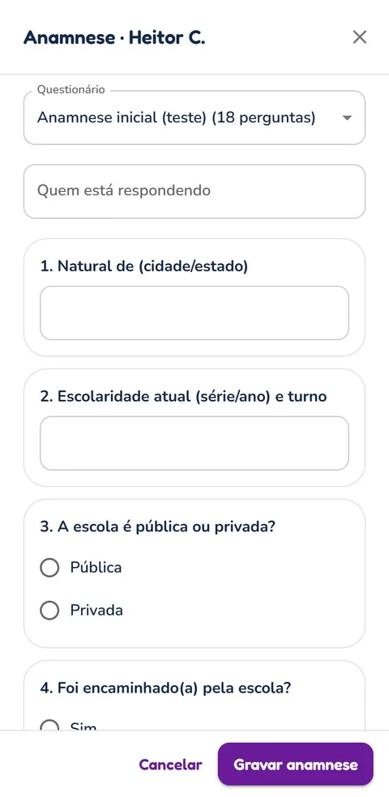
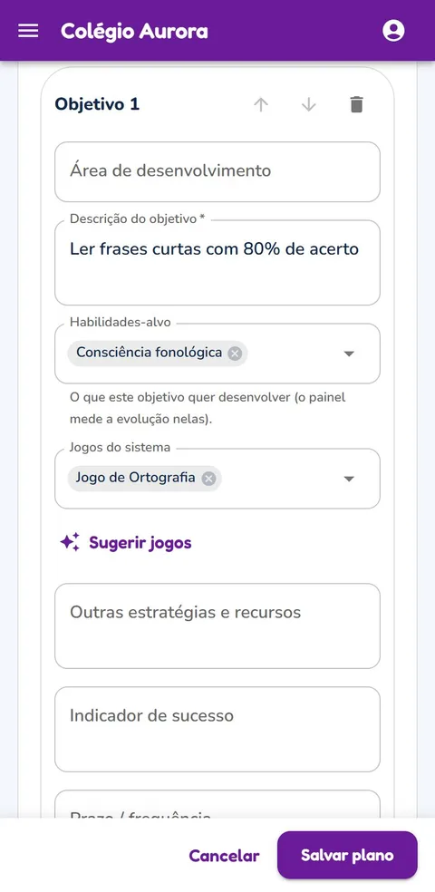
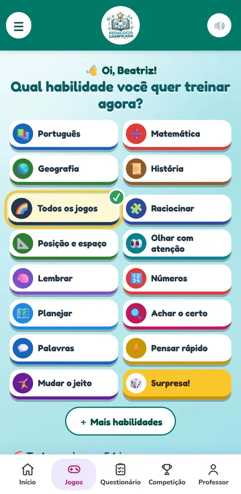
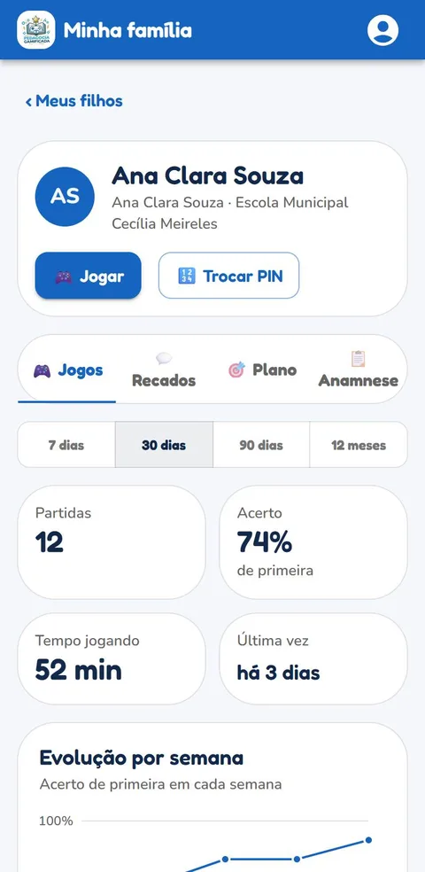
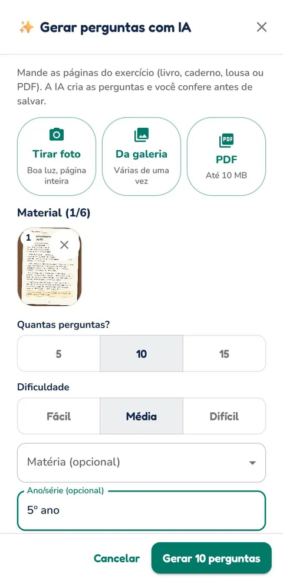
O aluno e a família não entram em “mais um app”: eles entram no app da escola, com o logo, o nome e as cores que já conhecem.
Nas imagens, o “Colégio Aurora” é uma escola de exemplo, com o roxo como cor da marca.
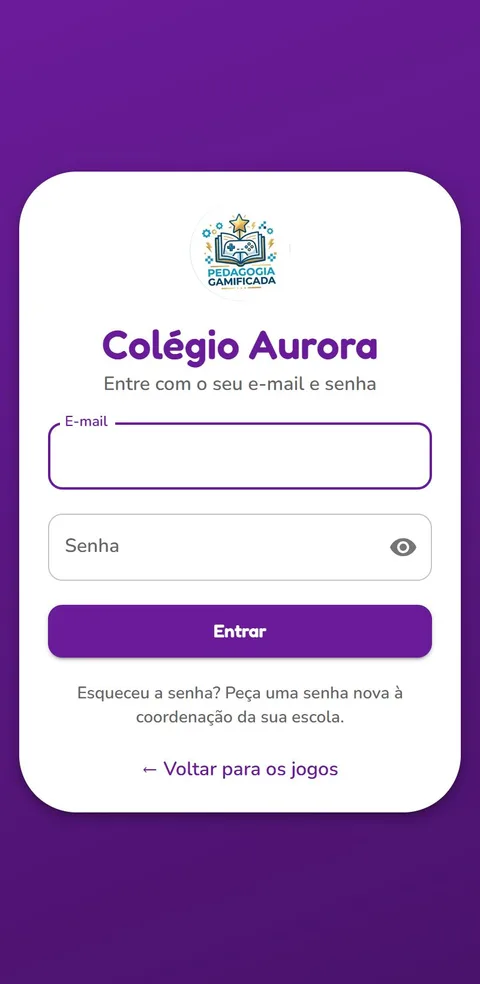
Os jogos do lado do aluno e a área de gestão do lado da escola.
Como a criança escolhe a habilidade, joga e vê o progresso.
Em 3 minutos: como os jogos ajudam a identificar cedo as dificuldades, o painel, a anamnese e o plano de objetivos, os questionários com IA, as competições e a área da família.
Fotografe a página, o exercício ou o quadro, ou envie um PDF. A IA cria as perguntas, você revisa e abre uma competição com ranking. Também dá para competir em qualquer um dos jogos.
Na sala, na terapia ou em casa, com o celular, o tablet ou o computador.
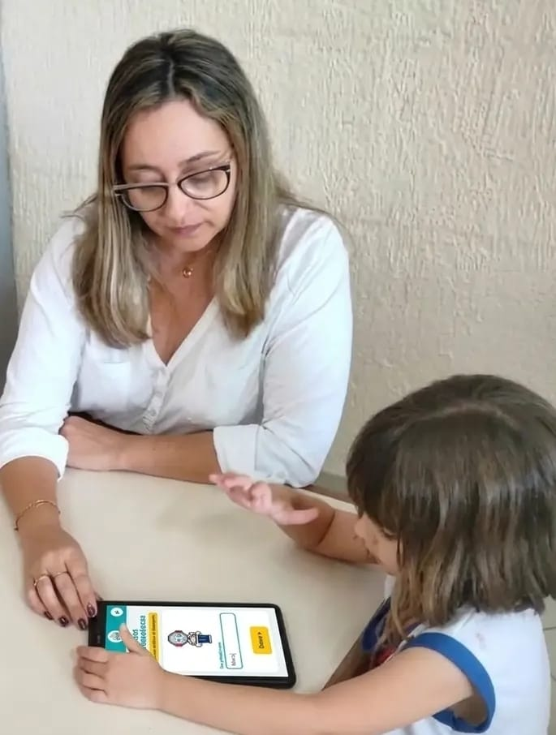
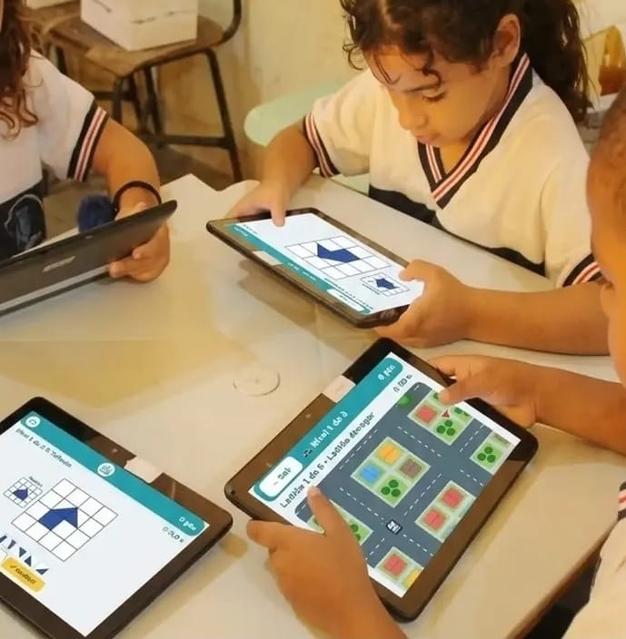
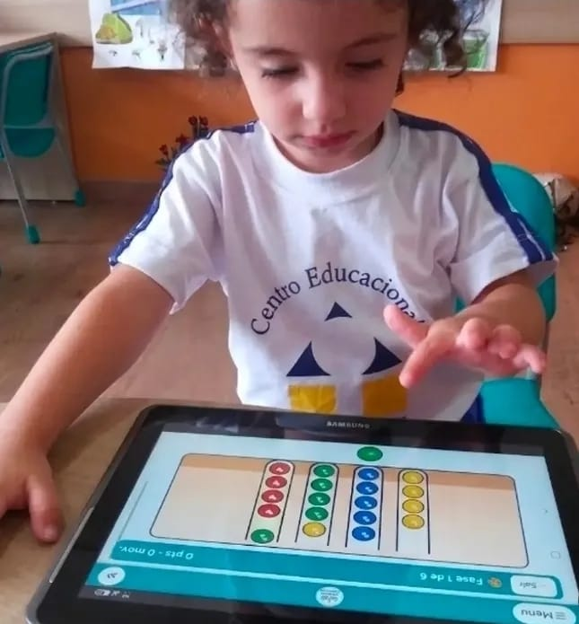
Turmas, professores e coordenação em um só lugar, com a marca da escola em todos os links.
Jogos de funções executivas com relatório, anamnese e plano de objetivos em PDF.
Os pais acompanham os jogos e os recados, no que a escola liberar.
Não. Os jogos abrem no navegador do celular, do tablet ou do computador. Se quiser, dá para colocar o ícone na tela inicial, como um aplicativo.
De 4 a 14 anos. Cada jogo tem níveis do fácil ao difícil, e a criança avança no próprio ritmo.
Sim. As partidas são curtas, o erro não é punido e o relatório ajuda o professor e a psicopedagoga a acompanhar cada criança. Os jogos não fazem diagnóstico: eles apoiam o trabalho do profissional.
Você fotografa a página ou envia um PDF, a IA cria as perguntas e você revisa antes de salvar. Depois escolhe a turma e o prazo e manda o convite. A foto não fica guardada.
Coletamos apenas o necessário. Cada escola vê só os próprios dados, e a escola pode desligar o registro das partidas por turma ou por aluno.
Toque em “Jogar agora” para conhecer os jogos. Para usar com a turma, fale com a gente pelo WhatsApp e a gente libera o acesso da sua escola para testar grátis.
Teste grátis com a sua turma. Sem compromisso.